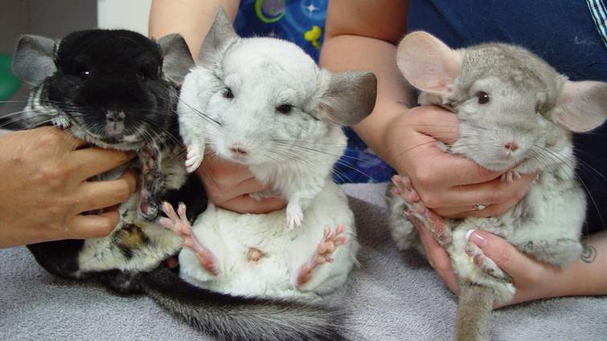
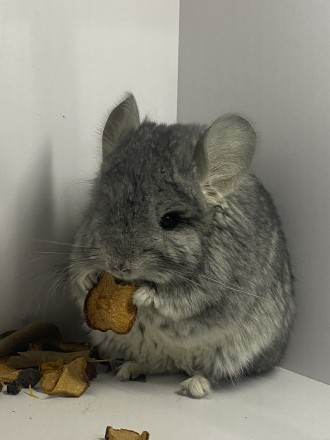
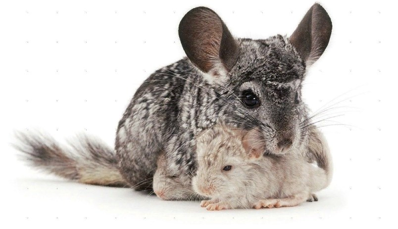

М’які та ніжні
Хутро шиншил неймовірно м’яке та приємне на дотик, що робить їх чудовими для обіймів і гладіння.
Не вимагають багато місця

Шиншили невеликі та живуть у клітках, тому вони ідеальні для квартир та невеликих будинків.
Розумні та допитливі

Ці гризуни дуже цікаві та швидко навчаються простим трюкам, що робить спілкування з ними цікавим.
Тривале життя

Шиншили можуть жити 10-20 років, тож вони стануть довготривалими та вірними домашніми друзями.